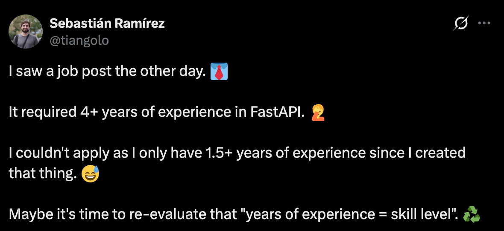
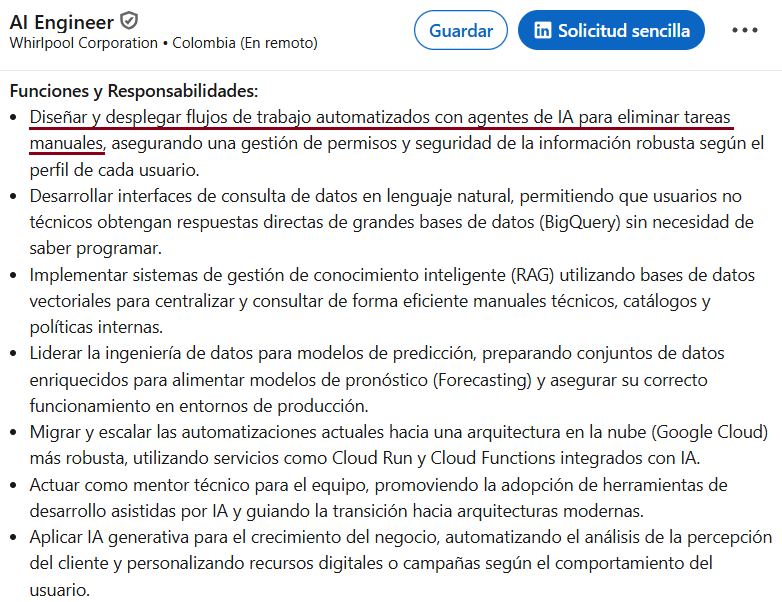
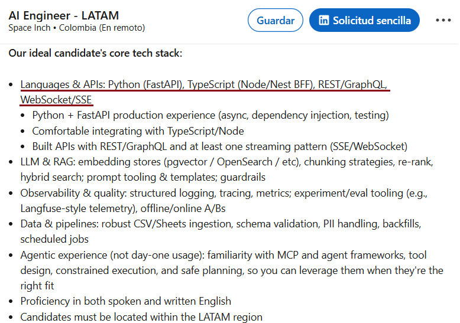
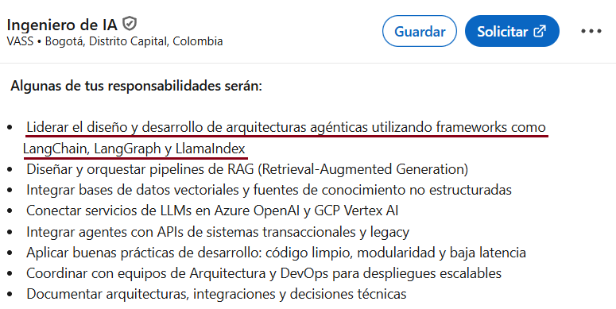
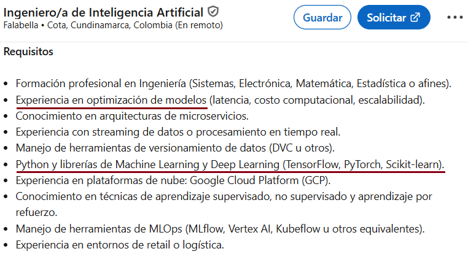
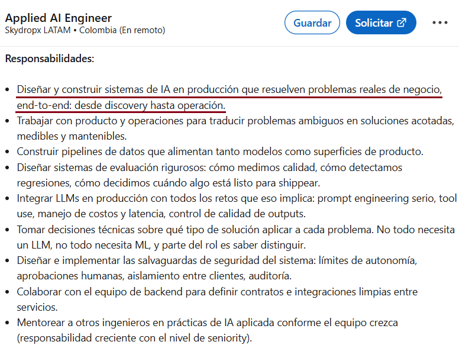
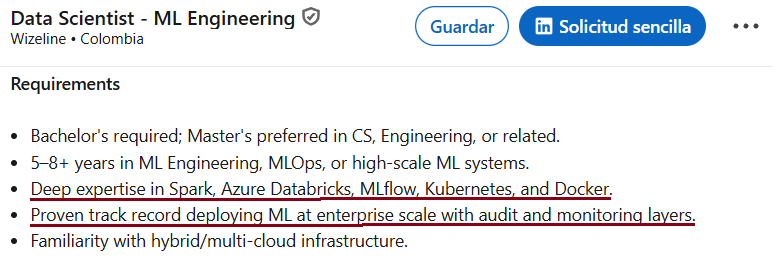

Sebastián Franco
AI Engineer
- Background en AI desde 2019
- Experiencia en ML en startups
- GenAI en S&P100
Qué es ser AI Engineer en realidad
Cuáles son los roles actuales de AI Engineer
En qué debería enfocarme según cada rol
Cómo salir del “Theoretical Hell”
Cómo romperla en entrevistas

La industria no tiene idea de qué quiere (todavía).
El rol es demasiado joven aún.
Estamos nombrando una disciplina mientras la estamos inventando.

Conecta modelos, herramientas, datos y procesos para automatizar trabajo real.

Construye productos completos donde la inteligencia artificial es parte central de la experiencia.

Diseña agentes capaces de razonar, usar herramientas y ejecutar tareas con autonomía controlada.

Convierte análisis, modelos y experimentos en decisiones y capacidades productivas.

Se mueve desde el problema de negocio hasta el deployment, monitoreo y mejora del sistema.

Hace que modelos y sistemas de AI sean confiables, observables y mantenibles en producción.
| Rol | Herramientas Externas | Ciencia de Datos + Estadística | Conocimiento de ML | Software Development | Cloud Services | Óptimo para un background de | Facilidad de Pivote |
|---|---|---|---|---|---|---|---|
| Automation Engineer | 8/10 | 3/10 | 1/10 | 5/10 | 5/10 | CRM, Corporate, Sales, Marketing | Fácil |
| Full Stack AI Engineer | 3/10 | 3/10 | 1/10 | 10/10 | 10/10 | Software Developer | Medio |
| GenAI Engineer | 3/10 | 4/10 | 3/10 | 8/10 | 7/10 | Software Developer, ML Engineer, Data Scientist | Medio |
| ML Engineer | 2/10 | 8/10 | 10/10 | 5/10 | 5/10 | Data Scientist | Medio |
| Data Scientist | 2/10 | 10/10 | 8/10 | 3/10 | 3/10 | Academia, Investigación | Medio |
| LLM Engineer | 5/10 | 10/10 | 10/10 | 5/10 | 5/10 | ML Engineer, Data Scientist | Difícil |
| MLOps / AIOps | 7/10 | 2/10 | 3/10 | 8/10 | 10/10 | Cloud, ML Engineer, AI Full Stack | Medio o Difícil |
Automatizar procesos conectando herramientas que ya existen.
CRM, Corporate, Sales y Marketing.
Facilidad de pivote: Medio
Construir productos completos acelerados por AI.
Software Developer.
Facilidad de pivote: Medio
Diseñar sistemas GenAI confiables, evaluables y útiles en producción.
Software Developer, ML Engineer y Data Scientist.
Facilidad de pivote: Medio
Convertir modelos entrenables en sistemas que viven fuera del notebook.
Data Scientist.
Facilidad de pivote: Medio
Transformar datos en explicaciones, decisiones y narrativas accionables.
Academia e Investigación.
Facilidad de pivote: Medio
Trabajar cerca del modelo: arquitectura, entrenamiento, evaluación y escalamiento.
ML Engineer y Data Scientist.
Facilidad de pivote: Difícil
Operar sistemas de AI con confiabilidad, seguridad, monitoreo y control.
Cloud, ML Engineer y AI Full Stack.
Facilidad de pivote: Medio o Difícil
Mucha teoría. Mucha preparación. Cero tracción real.
Todo parece obvio cuando alguien más ya resolvió los tradeoffs.
Solo ahí se siente la carga y las restricciones que ignoramos desde afuera.
Construir lo suficiente para que aparezcan las restricciones reales.
Convertir lo que resolví en evidencia clara, explicable y reutilizable.
Hasta que no me choque con los problemas, no voy a dominar lo que estoy aprendiendo.
Ya no investigo a ciegas, sin saber por qué aprendo. Ahora investigo para resolver un problema.
Puede que solucione o no el problema, pero todo lo que aprendí “sufriendo” me dio experiencia valiosa que la teoría no me ayudó a desarrollar.
Nuestro conocimiento escala en proporción a las nociones que tenemos.
Si no nos exponemos a sistemas reales, es poco probable encajar en la industria.
Ahora podemos empatizar con por qué se tomaron ciertas decisiones, no aceptarlas como una verdad absoluta en un Learning Path seguido casi a ciegas.
Eso nos acerca a lo que eventualmente vamos a hacer en un trabajo real.
Al final es hacer lo mismo, pero empezando antes.
Ahora que tenemos hands-on experience + serialización, ¿cómo hacemos para romperla en una entrevista?
Primero hay que pasar el filtro de claridad, relevancia y señales visibles.
Luego hay que demostrar criterio técnico, profundidad y capacidad de ejecución.
El software en la era de la IA no premia la memorización: premia los fundamentos y las capacidades.
Situation - Task - Action - Result
Prepararlo con antelación.
Un buen pitch va a eliminar dudas técnicas y de habilidades blandas.
Aportar a comunidades demuestra todo lo que hemos hablado antes.
Dar charlas, compartir conocimiento o apoyar en logística muestra iniciativa real.
No son experiencia laboral, pero sí un boost de crecimiento y confianza.
Ser malo en entrevistas no significa ser malo como developer.
Lo contrario también es cierto.
Todo esto aplica al mundo actual del AI en el código.